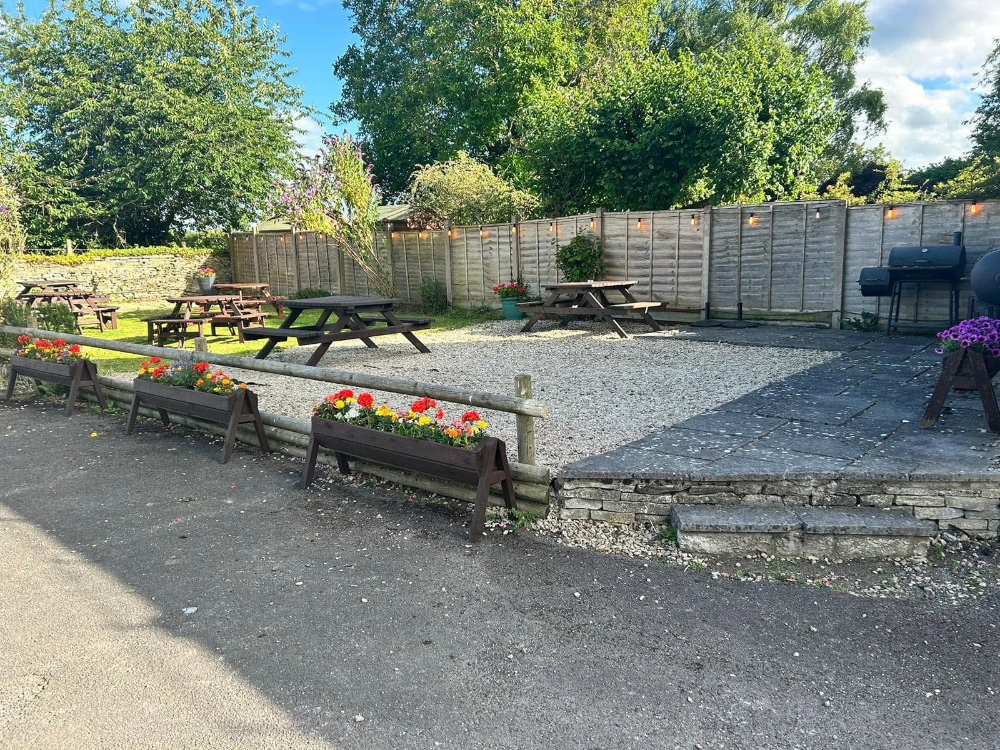
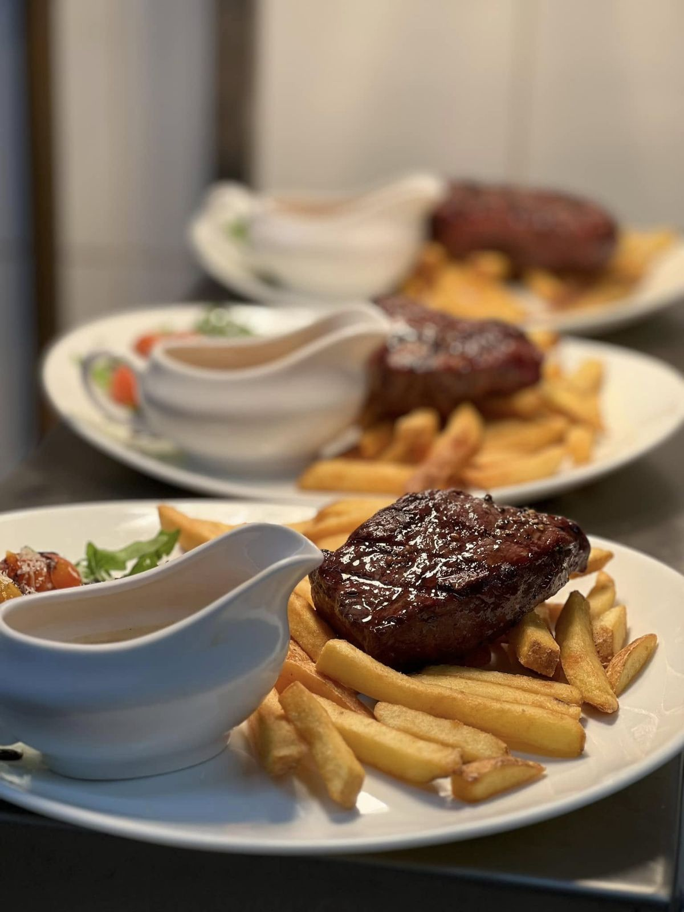
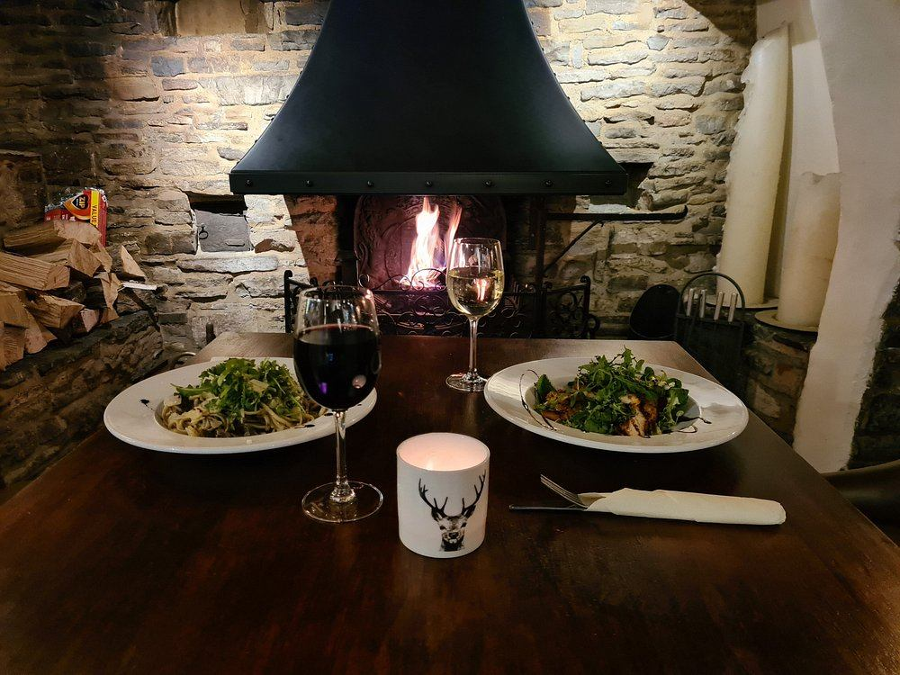

The Kings Arms
Smoke House
A historic village pub with hearty food and a warm welcome.
Your village
pub and Smoke House
Food, drinks and a place to meet in the heart of Cleeve Prior.
The Kings Arms stands on Bidford Road in a Grade II-listed building dating back to the sixteenth century. The Smoke House celebrated its grand opening on 24 August 2025.
About the pub

Festive dining
at The Kings Arms
Our festive menu offers two courses for £40 or three for £45 per person.
Choose from dishes including stuffed roast turkey, slow-roasted lamb shank, lightly smoked salmon and an apricot and nut roast. Starters and desserts complete the menu.
View festive menu Sunday menuFind what
you're looking for

A pub with roots in
the sixteenth century
The original stonework and inglenook fireplace are still part of the pub today.
Discover our history
In the heart of
Cleeve Prior
You'll find The Kings Arms on Bidford Road, close to Bidford-on-Avon and Evesham.
Visit us for food, a drink or a catch-up. Use the directions page to plan your journey.
Location & contactCome and see us
Bidford Road · Cleeve Prior · WR11 8LQ